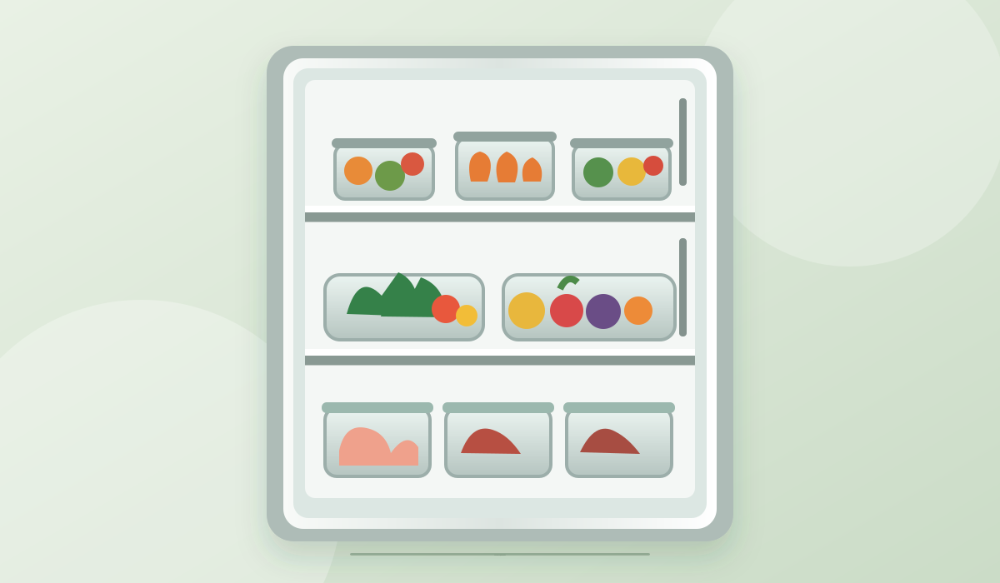
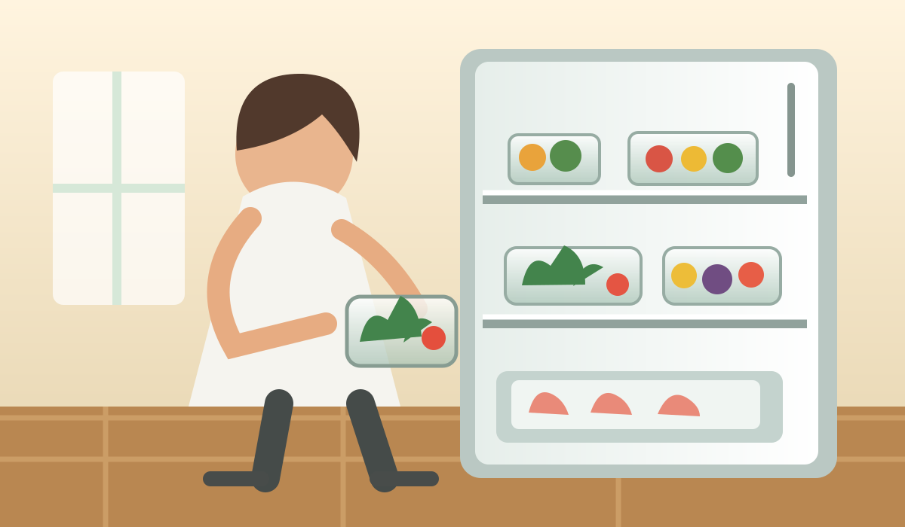
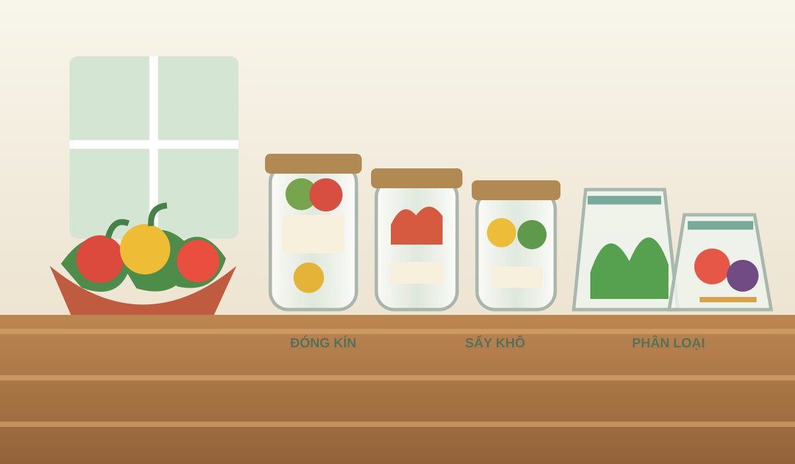
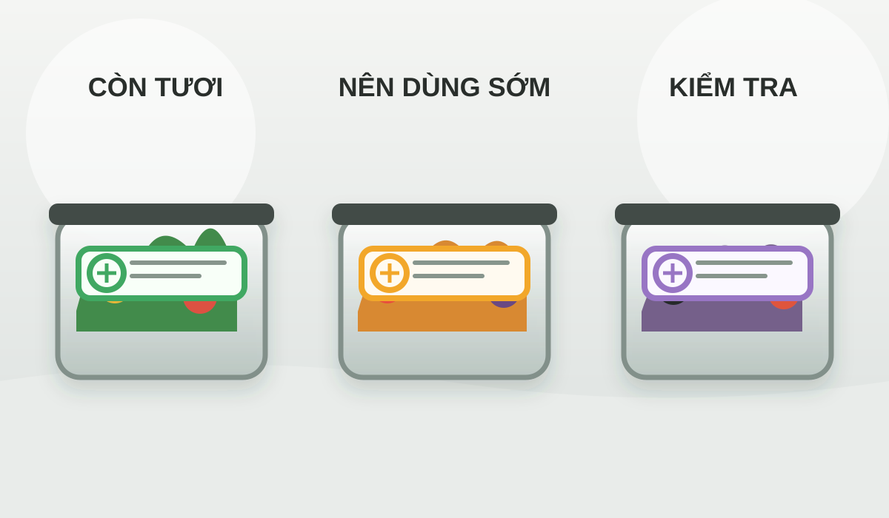

Bảo Quản Thực Phẩm Là Gì? Vai Trò Và Cách Bảo Quản Hiệu Quả
Bảo quản đúng cách giúp duy trì chất lượng thực phẩm trong thời gian lưu trữ, hỗ trợ sử dụng an toàn và giảm lượng thực phẩm bị bỏ đi. Cùng tìm hiểu những phương pháp phổ biến và cách sắp xếp thực phẩm khoa học.

I. Bảo quản thực phẩm là gì?
Bảo quản thực phẩm là quá trình áp dụng các phương pháp phù hợp nhằm hạn chế sự hư hỏng, duy trì chất lượng và kéo dài thời gian sử dụng. Việc này quan trọng trong đời sống hằng ngày, từ lưu trữ thực phẩm tại gia đình đến quản lý nguyên liệu tại cơ sở kinh doanh.
Trong quá trình lưu trữ, thực phẩm có thể chịu ảnh hưởng từ nhiệt độ, độ ẩm và vi sinh vật. Nếu điều kiện bảo quản không phù hợp, thực phẩm có thể thay đổi màu sắc, mùi vị hoặc chất lượng. Vì vậy, lựa chọn phương pháp phù hợp là yếu tố cần thiết để hạn chế lãng phí và hỗ trợ an toàn thực phẩm.
II. Bảo quản thực phẩm có vai trò gì?
2.1. Duy trì chất lượng và độ tươi
Điều kiện bảo quản phù hợp giúp làm chậm những biến đổi về chất lượng, giữ màu sắc, hương vị và kết cấu của thực phẩm trong thời gian lưu trữ. Mỗi nhóm thực phẩm có đặc điểm khác nhau, nên cần lựa chọn cách lưu trữ tương ứng để sử dụng hiệu quả.
2.2. Hỗ trợ hạn chế nguy cơ mất an toàn
Kiểm soát nhiệt độ, phân loại thực phẩm sống và chín, dùng dụng cụ sạch và theo dõi thời gian lưu trữ có thể giúp hạn chế nhiễm chéo. Những bước này đặc biệt hữu ích với thực phẩm tươi sống và món ăn đã chế biến.
2.3. Hạn chế lãng phí và tiết kiệm chi phí
Sắp xếp thực phẩm khoa học giúp người dùng dễ nhận biết những gì đang có, chủ động lên kế hoạch sử dụng và hạn chế tình trạng thực phẩm bị quên trong tủ. Thói quen này góp phần giảm lượng thực phẩm phải bỏ đi.

III. Các cách bảo quản thực phẩm phổ biến
3.1. Bảo quản bằng phương pháp làm lạnh
Làm lạnh sử dụng nhiệt độ thấp để làm chậm sự phát triển của vi sinh vật và quá trình hư hỏng. Cách này thường được áp dụng cho rau củ, trái cây, sữa và nhiều loại thực phẩm tươi. Nên dùng hộp kín phù hợp, duy trì nhiệt độ theo hướng dẫn của thiết bị và theo dõi thời gian lưu trữ.
3.2. Bảo quản bằng phương pháp đông lạnh
Đông lạnh làm chậm đáng kể các biến đổi chất lượng, thường được sử dụng cho thịt, cá, hải sản và thực phẩm chế biến sẵn. Trước khi cấp đông, có thể chia thực phẩm thành khẩu phần phù hợp, đóng gói kín và ghi chú ngày lưu trữ. Khi rã đông, hãy làm theo hướng dẫn an toàn phù hợp với từng loại thực phẩm.
3.3. Bảo quản bằng phương pháp sấy khô và đóng gói
Sấy khô làm giảm lượng nước trong thực phẩm, từ đó hạn chế điều kiện phát triển của nhiều loại vi sinh vật. Phương pháp này thường áp dụng cho trái cây, ngũ cốc, các loại hạt và thủy sản. Thực phẩm sau khi sấy cần được đóng gói kín và giữ ở nơi khô ráo, thoáng mát; hiệu quả còn phụ thuộc vào độ ẩm còn lại và môi trường lưu trữ.

IV. Sắp xếp tủ lạnh và theo dõi độ tươi
Tủ lạnh giúp duy trì điều kiện nhiệt độ phù hợp và hỗ trợ kéo dài thời gian lưu trữ. Khi lựa chọn thiết bị, hãy cân nhắc dung tích, khả năng duy trì nhiệt độ và cách phân chia ngăn chứa. Có thể tham khảo hướng dẫn của nhà sản xuất về mức nhiệt phù hợp cho từng ngăn.
Sắp xếp thực phẩm hợp lý giúp tối ưu không gian và hạn chế nguy cơ nhiễm chéo. Nên phân loại thực phẩm sống và chín, sử dụng hộp đựng phù hợp, tránh xếp quá đầy để không khí lạnh lưu thông. Ghi chú ngày mua hoặc ngày chế biến cũng giúp chủ động sử dụng thực phẩm theo thứ tự.
4.1. Công cụ hỗ trợ theo dõi
Bên cạnh việc ghi chú thời gian lưu trữ, một số giải pháp công nghệ như cảm biến, nhãn chỉ thị màu sắc và hệ thống quản lý có thể cung cấp thông tin trực quan hơn. Tem thông minh đổi màu là một hướng ứng dụng hỗ trợ người dùng quan sát thay đổi trong quá trình bảo quản. Hiệu quả của từng giải pháp phụ thuộc vào cơ chế hoạt động và độ chính xác đã được kiểm chứng.

V. Lưu ý để bảo quản thực phẩm hiệu quả
Hãy chọn cách lưu trữ theo đặc tính của từng loại thực phẩm, giữ dụng cụ và hộp đựng sạch, đồng thời theo dõi thời gian sử dụng. Làm lạnh hoặc đông lạnh không thay thế việc kiểm tra thực phẩm và tuân thủ hướng dẫn bảo quản phù hợp.
Tem thông minh đổi màu giúp cung cấp tín hiệu trực quan trong quá trình theo dõi thực phẩm được bảo quản lạnh.